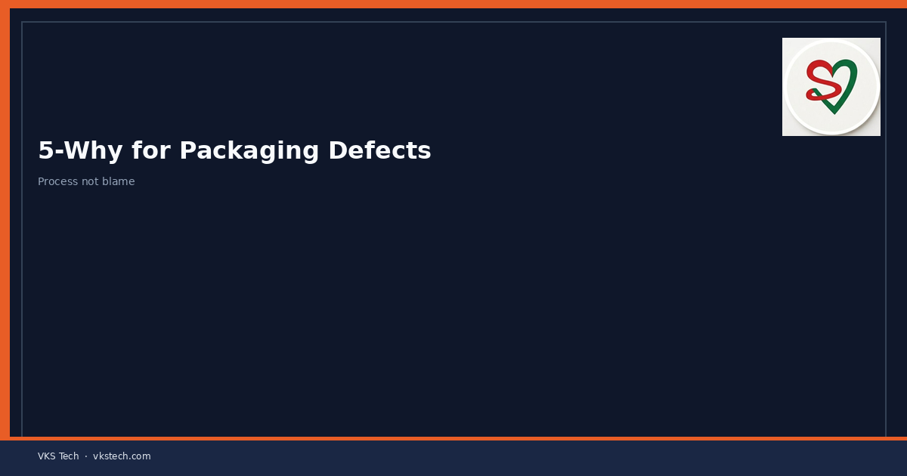
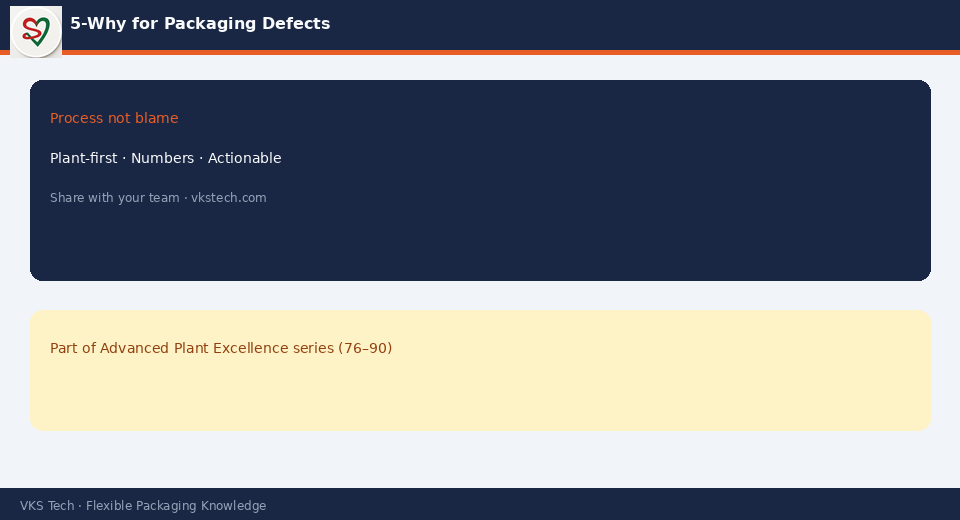

❓ Five-Why Stops the Team from Treating Symptoms. Use It on Recurring Converting Defects So the Real Cause Is Fixed Once
📖 11-min read · Problem Solving · Quality + Production + PPC
When the same defect returns week after week — wrinkles, weak bond, registration drift, edge cracks — the usual response is another temporary fix: adjust tension, change viscosity, slow the machine, or blame the material. Five-Why (and similar structured methods) forces the team to keep asking until the real controllable cause is found and fixed. Done well, it turns recurring waste into permanent improvement.
- Use Five-Why on recurring or high-cost defects, not on every one-off
- Ask “why” until you reach a cause the plant can actually control
- Write the chain down; do not stop at the first convenient answer
- Verify the fix with data after the change
- Share the learning so the same defect is not “solved” again next month

1. How to Run a Useful Five-Why
- Define the problem clearly — What, where, when, how much. “Bond is low on structure X since week 12” is better than “quality is bad”.
- Ask why — Each answer becomes the next question. Keep going until the answer is something the team can change (setting, method, training, design, supplier agreement).
- Stop at the controllable cause — “Humidity was high” is only useful if the next step is a control the plant owns. “Supplier material varies” needs a measurable spec and incoming check.
- Confirm with data — After the fix, check whether the defect rate actually dropped.
- Document and share — One-page summary is enough. Put it where the next shift and the next engineer can find it.
2. Common Pitfalls
| Pitfall | Better approach |
|---|---|
| Stopping at the first answer | Keep asking until the cause is actionable |
| Blaming people | Look for process, method, training or design gaps |
| No verification | Measure the defect after the change |
| No documentation | Write the chain and the fix so learning is not lost |
3. When to Use It
- Same defect appears repeatedly
- High waste or high claim cost
- Customer complaint with no clear root cause
- After a process or material change that created new problems
Five-Why is a thinking discipline more than a form. Use it on the important recurring problems and the plant will stop fighting the same fires.
❓ फाइव-व्हाई टीम को लक्षणों का इलाज करने से रोकता है। आवर्ती कन्वर्टिंग दोषों पर इसका उपयोग करें ताकि असली कारण एक बार ठीक हो
📖 11-मिनट पढ़ें · प्रॉब्लम सॉल्विंग · क्वालिटी + प्रोडक्शन + PPC
जब वही दोष हफ्ते-दर-हफ्ते लौटता है — झुर्रियाँ, कमजोर बॉन्ड, रजिस्ट्रेशन ड्रिफ्ट — सामान्य प्रतिक्रिया एक और अस्थायी फिक्स होती है। फाइव-व्हाई टीम को तब तक पूछने पर मजबूर करता है जब तक असली नियंत्रण योग्य कारण न मिल जाए और ठीक न हो जाए।
- आवर्ती या उच्च-लागत दोषों पर इस्तेमाल करें
- “क्यों” तब तक पूछें जब तक प्लांट नियंत्रित कर सके वाला कारण न मिले
- श्रृंखला लिखें; पहले सुविधाजनक जवाब पर न रुकें
- बदलाव के बाद डेटा से फिक्स सत्यापित करें